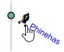
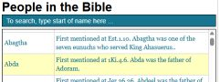
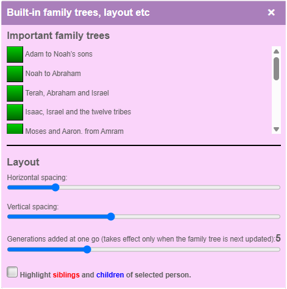
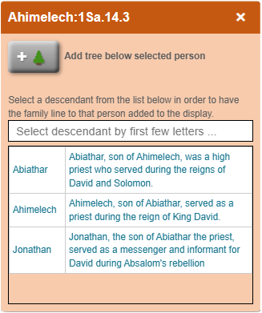

Icons — Quick reference
Icons reflect certain significant roles, as follows:
|
♝: A high priest.
|
👑🐫: A pharoah.
|
|
🙏: A priest.
|
🎤🎵: A singer.
|
|
⚖: A judge.
|
🗣🌍: An apostle.
|
|
👑: Royalty. |
✍: An official.
|
|
🕊: A prophet. |
🏛: A senior official.
|
|
👥: A group.
|
|
Overview
The top (yellow) area of the screen tells you about the selected person.
Below the yellow area, the bottom (white) area shows a family tree.
At the top left of the screen (on large screens) or on a separate tab (on small ones) there is a full list of all the people in the Bible.
And at the bottom left of the screen (on large screens) or on a separate tab (on small ones) there is a list of all the scriptures which make reference to the selected person.
To begin with, the selected person is the person who appears at the top of the tree — so you are seeing the family tree for that person and information about them.
Navigating
You can move to see other parts of the family tree by dragging the tree with the mouse. Alternatively, you can use the
button to move more quickly.
You can also resize the family tree using the scroll wheel on the mouse (pinch and stretch on a touch screen). If you do this, the whole tree is scaled, including the text nodes.
This may sometimes make it difficult to read them. There are menu options which can alter the layout without changing the text size. We look at these below.
|  |
You can change the selected person by clicking on a person in the family tree. Doing this alters the information in the yellow box. It does not change the family tree. |
|
Sometimes an up-arrow button appears at the top left of the screen. If the father of the person at the top of the family tree is known, you will see a blue button.
If the mother is known, you'll see a pink button. If both parents are known, you will see both. Clicking one of these buttons alters the display so that the parent
appears at the top, and the parent becomes the selected person. |
|
|  |
You can also choose a new person by clicking on a person in the full list of people (top left of large screens, separate tab on small ones). This redraws the family tree with that
person at the top, and makes them the selected person. |
And finally the yellow box may contain scripture references or the names of people which are formatted as links. If you click on a scripture reference, it will appear in the
pane at the bottom left of the screen (on large screens) or on a separate tab (on small ones). And if you click on a person, the program will show the family tree for that
person, and they will become the selected person.
The menu
The button displays a menu which lets you display certain built-in family trees (the green buttons below).
The menu also contains sliders which let you change the horizontal and vertical spacing of the family tree without altering the size of the text; and a slider which lets you control how
many generations of the family tree are displayed when you next change the tree. And there is also a tick box which highights the siblings and children of the selected person. This may be
useful if you cannot see all of them on the screen at once.

The right-click menu
Right-clicking on a person selects them and shows a menu (long press on a touch screen).
If the person has descendants, you can turn on and off the display of their descendants.
You can also turn off the family tree below the person if the screen is becoming too cluttered.
And the menu lets you highpght the family tree to a selected descendant of the person.

Highlighting
- If you select a person, the line from the person at the top of the screen to the selected person is highlighted in blue.
- If the family line for Jesus overlaps with the family tree being displayed, the family line for Jesus is highlighted in red.
- In Old Testament times, emphasis was given to the male line. We reflect this by using a solid line for the male line, and a dotted line for the female line.
Things to be aware of
- The names here are the ones used in the English Standard Version of the Bible (ESV).
- In some places, names include a scripture reference to help distinguish different people with the same name. The reference gives the first verse where the person is mentioned.
- Don’t forget that different people may have the same name, and the same person may have more than one name (Abram and Abraham for instance). This can be confusing sometimes.
- In some cases, we give information about the number of generations after Adam to the given person, or the number of generations before Jesus. These numbers are approximate:
in the original texts, phrases like ‘son of’ sometimes means not ‘immediate child’ but ‘descendant of’, so it is not always clear how many generations are involved.
- When the line of descendant to Jesus or some other person is being highlighted, don’t be surprised if more than one line is displayed. Where we have details about both parents, you will
certainly get at least two lines, one for the mother and one for the father. And where there are shared ancestors things can get even more complicated than that.